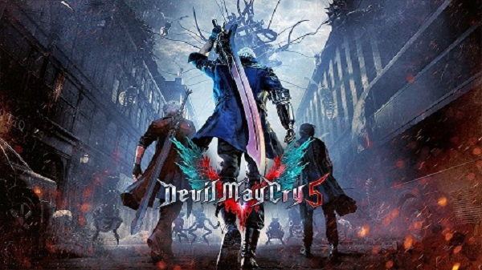

舞台發生在《DMC4》的幾年後。憑藉最新遊戲引擎的力量，傳說中的Stylish Action強勢回歸。
最强的恶魔猎人强势回归！动作游戏迷翘首以待，传说中的Stylish Action《Devil May Cry》终于復活！
超越现实的真实感。「最强」、「革新」、「王道」──三款不同的战斗风格。互相竞争、炫示的联机游玩功能。
动作游戏的所有快感都集结于此！
【数位版预约特典】-「男角色配色包(Nero、Dante)」-「女角色配色包(Nico、Lady、Trish)」-Devil May Cry 5 壁纸